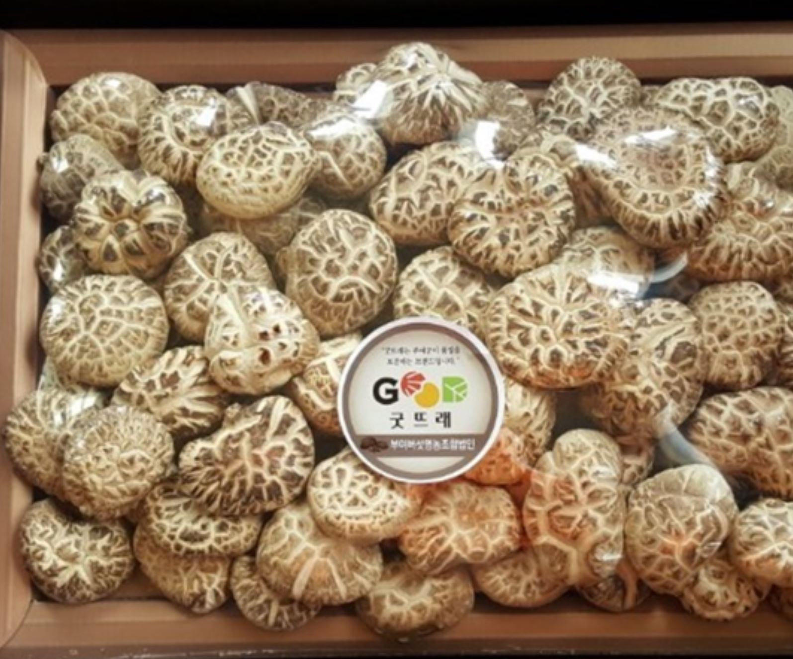
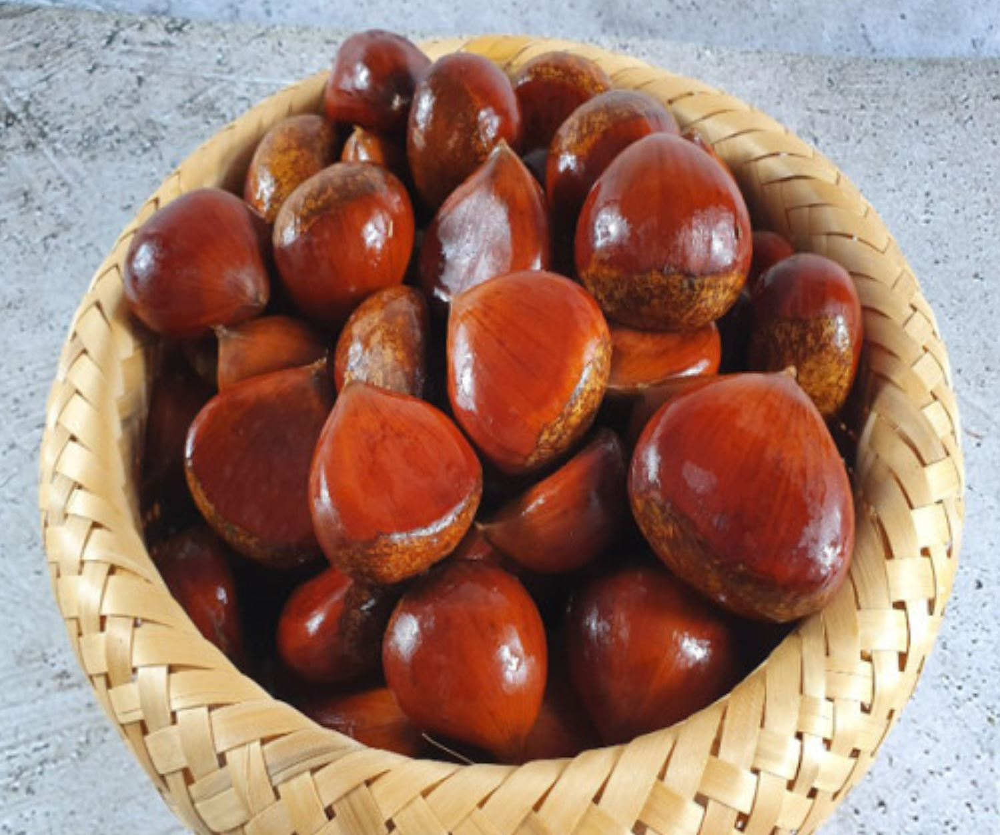
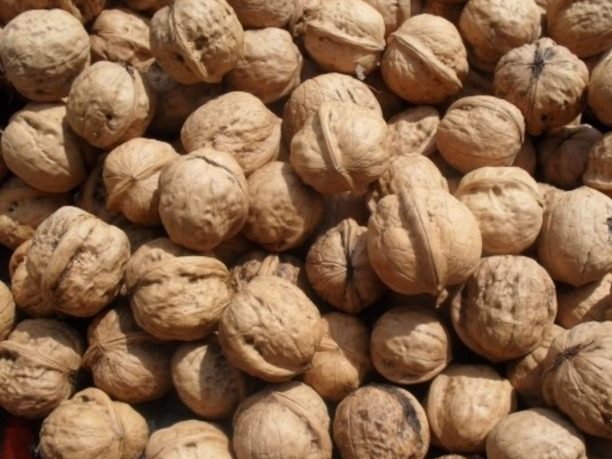

상품명 : 표고버섯
원산지 : 충청남도 부여
부여는 중·저온성 품종을 주 재배품종으로 통일하고 임산물 브랜드화 등의 품질규격에 맞는 고품질 버섯을 생산한다.
구매링크

상품명 : 밤
원산지 : 충청남도 공주
공주밤은 당도가 높고 특유의 고소한 맛이 있다.
구매링크

상품명 : 호두
충청남도 천안
천안호두는 무기질, 유리아미노산, 단백질과 지방 등의 영양성분이 풍부하며 맛이 고소한 것이 특징이다.
구매링크